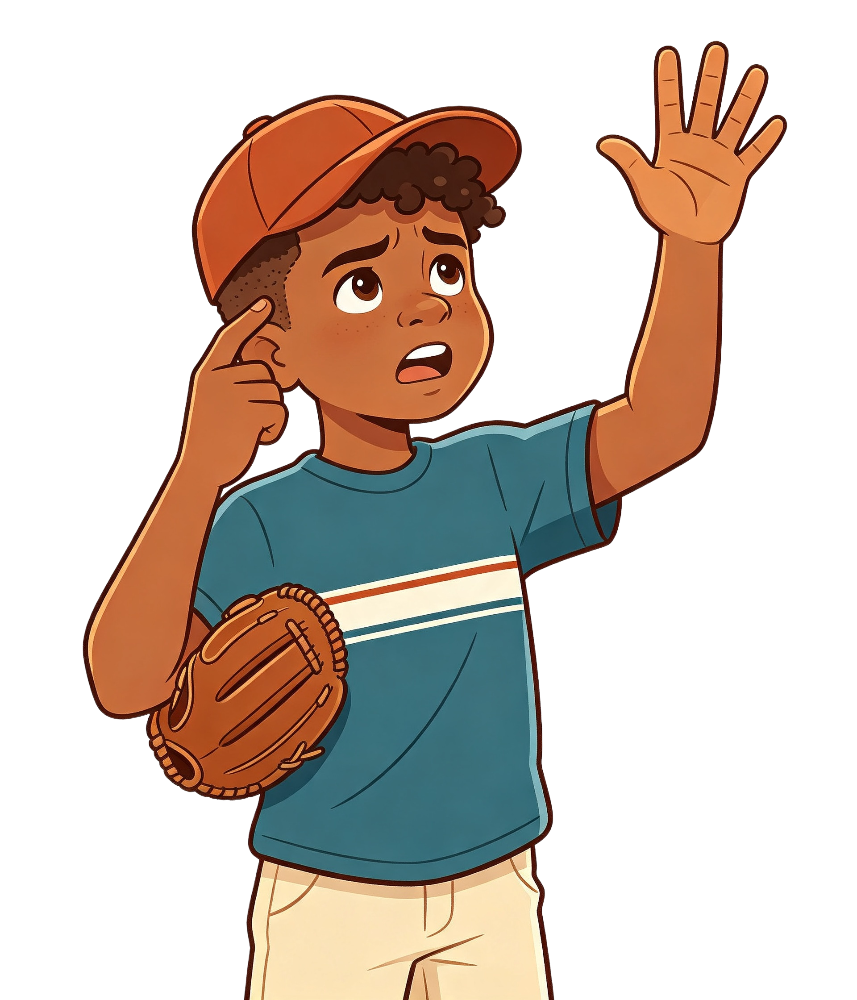
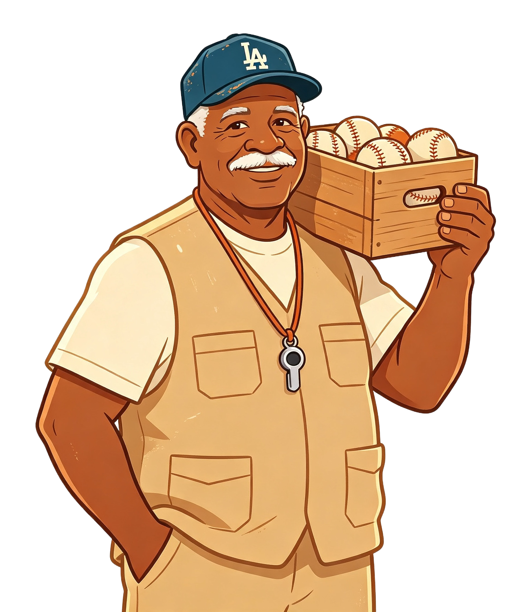
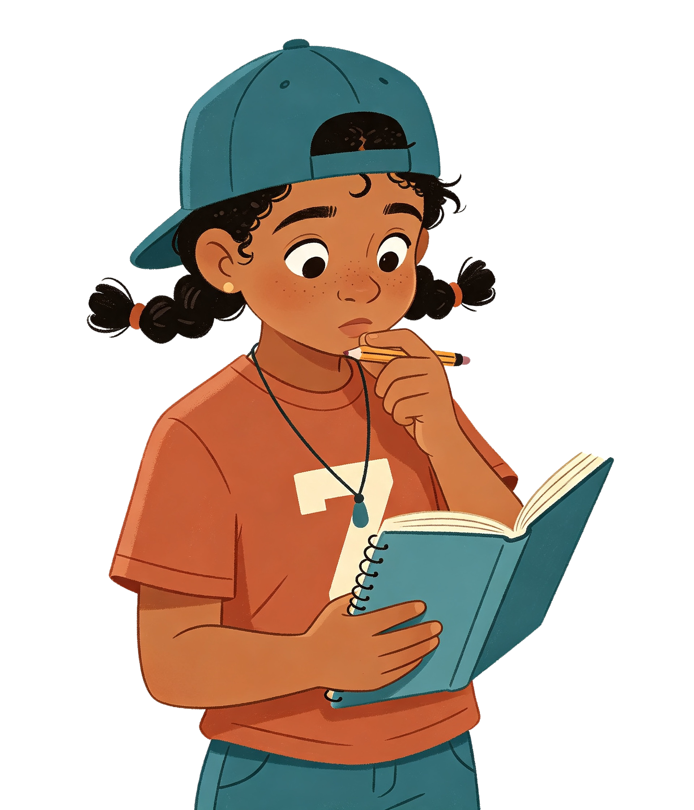

Sábado en el play de Bonao. Yaritza narra el partido: dice en voz alta cada carrera y la anota en un marcador de madera que solo avanza.
Toca las tres viñetas para saber qué pasó hoy en el play.
Antes de contar, apuesta: ¿cuántas pelotas hay en el cajón?
Toca cada pelota una sola vez. El último número que digas es el total.
0En el cajón ya hay 14 pelotas contadas. Llegan 3 más y Kelvin quiere empezar de nuevo desde uno.
¿Por qué número sigue Yaritza?

Yaritza guarda el 14 y sigue. Coloca en orden los tres números que dice.
Kelvin tenía 14 y contó tres pelotas nuevas así. Toca el número que sobra.
Con esos números, a Kelvin le sale 16.
Desliza la palanca y fíjate en lo que nunca cambia.
Deslízala hacia adelante y hacia atrás las veces que quieras.
«Para saber el total hay que volver a contar todo desde uno.»
Don Radhamés siguió desde 26. Completa los números que faltan.

El marcador está en 20 y entran 4 carreras. Toca dónde queda.
Cinco anotaciones seguidas. ¿Qué número sigue?
Las Cotorras llevaban 45 carreras en la temporada y hoy anotaron 3.
Toca en el cuadro los tres números que dijo Yaritza al seguir.
Toca una situación y luego su caja.
Cada entrada parte del total anterior. Completa los dos huecos.
¿Qué tan lista o listo te sientes para contar sin volver a empezar?
